|
PART II:
The Space Scene |
|
Step 15: Comet |
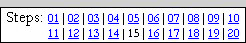 |
This step is short, but will allow us to create a very effective comet.
- Open your Space14 file in Photopea
- Turn on the visibility of your Star Field layer folder and turn
off the visibility of all of the other layer folders (this will make it
easier to see your comet)
- Insert a new layer and name it Comet - make sure it is at
the top of the layer stack
- Click the Brush Tool and set the brush to Soft Mechanical 24
pixels and
the Size to 25
px
- Set both Opacity and Flow to 50%
- Press Ctrl+1 on the keyboard to set the zoom level to 100%
- Press D and then press X on the keyboard to set the Foreground color to white
- Click several times (around 10 clicks works good) in one spot to create
a white dot (the same advice applies here from when we were creating the bright stars
- don't click and drag, just click several times in one spot)
- Click Edit on the Menu bar and then point at Transform
and click Perspective...
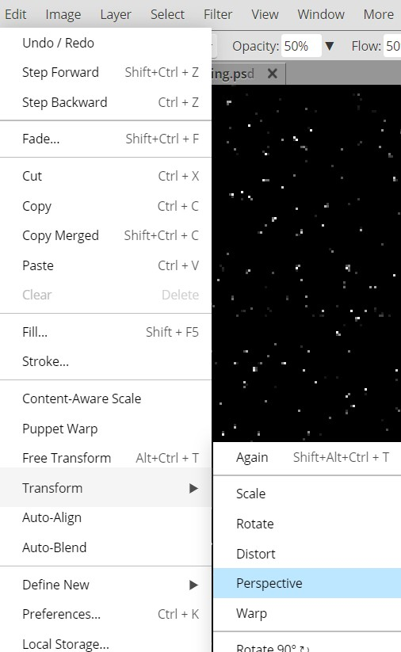
This will add Perspective resize handles to our white ball...
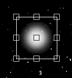
The Perspective tool allows us to adjust an object so that it looks either
farther away or closer than it really is. We don't really care about this
function, but instead are going to use it to stretch out our white ball and
create a nice tail for our comet.
- Click the center left Perspective resize handle...
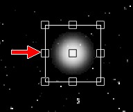
And drag it to the left until the W (width) indicator reads around 250...
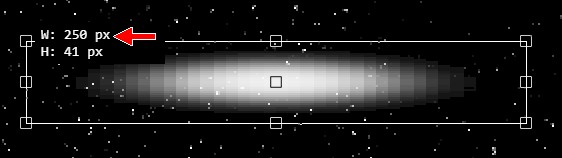
Don't worry about getting it to read exactly 250, just get close
- Click the top left Perspective resize handle and drag it up until the H
(height) indicator reads around 100...
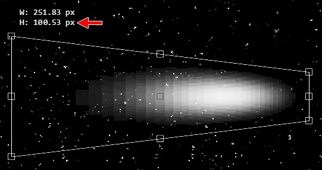
Again, don't worry about getting it to read exactly 100, just get close
- Click the middle right Perspective resize handle and drag it to the
right until the W indicator reads around 300...
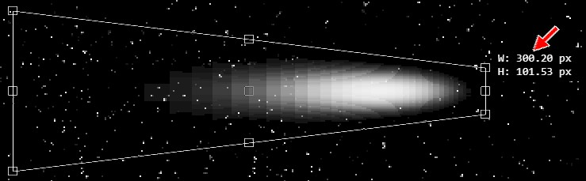
- Press Enter on the keyboard to apply the Perspective Transform - your
comment should now look like this:
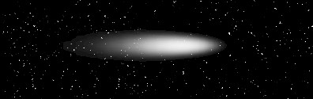
Not a bad start, but you will notice that our comet tail looks really smooth.
In reality, comets are balls of ice and rock that slowly disintegrate as they
near the sun. Let's make a quick adjustment to our comet's tail so that it looks a
ice and rock being thrown off into space.
- Click Filter then point at Noise and click Add Noise
- Change the settings to match those in the image below...
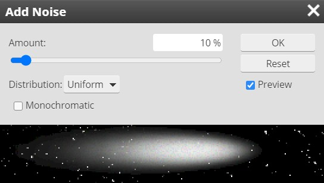
This should give us a tail that has a slight blur and some nice graininess so that it looks like it
is in motion and the tail is actually composed of ice particles
- Click OK
Now let's give our comet a nice head that all of the dust and ice is flying
off of.
- Insert a new layer at the top of the layer stack and name it Comet2
- Make sure the Brush tool is still selected and press the [ key
once to decrease the size of the Brush to 20 px
- Click 10 times in one spot - it does not really matter where you place
this white dot
- Click the Move Tool...
- Click and drag your white dot and place it near the right end of your tail...
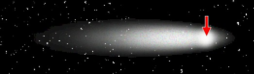
Note that you don't want to place it at the very end, but place it back a
small amount - the red arrow above shows where I have placed my white dot
- Make the Comet layer the active layer
- Select the Eraser Tool and use the ] key to increase the
brush size to 40 px
- Remove the very tip of the comet tail that sits past the white dot...
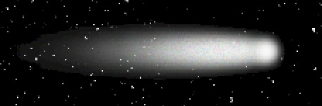
- Make the Comet2 layer the active layer
- Click Edit on the Menu bar and then point at Transform
and click Scale
- Using the middle left resize handle, click and drag left until the W
indicator is at 40 px
- Press and hold the Alt key and click and drag the middle bottom
resize handle up until the H indicator is at 26
Pressing the Alt key while resizing a shape in Photopea will cause the
opposite side of the object to move the same distance that we move the selected side. It
is a quick and easy way to make sure that our object remains centered where it
is.
- Press Enter to apply the transform
- Make the Comet layer the active layer
- Click Edit on the Menu bar and then point at Transform
and click Scale
- Press and hold the Alt key and click and drag the middle bottom
resize handle until the H indicator is around 40
- Press Enter to apply the transform - your comet should now look like
this...
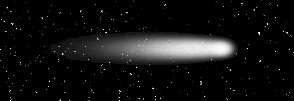
- Select both comet layers and place them in a layer folder - name the
folder Comet
Our next task is to get our comet into position.
|
OK, science lesson time:
comets are chunks of ice and dirt flying through space. A comet's tail occurs
when the high energy particles
being ejected by stars impact the comet's head and burns off some of the
surface material and flings it into space. Therefore, comet tails always point away
from a star. Which means that when the comet is flying away from the star,
its tail is in front of it and the comet is actually flying through its tail.
The point is,
no matter where you put your comet, make sure the tail points away
from the center of the star.
In other words,
comets ALWAYS look like they are
flying into the CENTER of the sun.
Take a look at the images below...
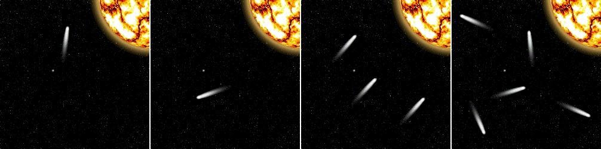
Unfortunately, they are all physically impossible.
Remember that we are going for realism with our space scene, so DON'T
BREAK THE LAWS OF PHYSICS.
If you want to include multiple comets that's fine, just make sure that
they all look like they are flying into the center of your sun. |
- Make sure the Comet layer folder is selected
- Click Edit then Free Transform to rotate your comet so
that it appears to be flying into your sun, and move your comet to a spot in
your scene that you like
Be careful to not place your comet too close to the sun. Large gravity fields
have have been known to rip comets to shreds (look up the Shoemaker-Levy 9 comet
if you don't believe me), so place your comet a nice distance from your sun
(also try not to have it flying into either one of your planets...we don't need
another dinosaur extinction).
- Lock your Comet layer - your Layers panel should now look like
this...
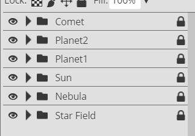
You should now have a space
scene similar to the one below...
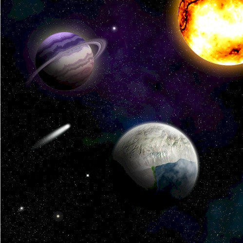
Note that your comet will not be in the same position as
mine.
Now let's throw in an asteroid or two.....or three.
- Click File and then click Save as PSD
- Name the file Space15
01 |
02 |
03 |
04 |
05 |
06 |
07 |
08 |
09 |
10 |
11 |
12 |
13 |
14 | 15 |
16 |
17 |
18 |
19 |
20